Desktop visual baselines · Lettuce v4.15.3
24 approved images from the real SPA with fixed synthetic data. The repository owner approved stage 1 on 2026-10-04 and the six stage 2 forms/detail views on 2026-10-05. Chromium on pinned Linux amd64; click any image for full resolution.
Includes Feedback, dictionaries, Dashboard, Users and Teams, plus representative forms and details. Feedback rows stack at 1280px with the expanded sidebar; normal vertical scrolling is allowed. The active sidebar destination is now revealed in its own scroll viewport.
dictionary career paths admin en light 12801280 × 1000 capture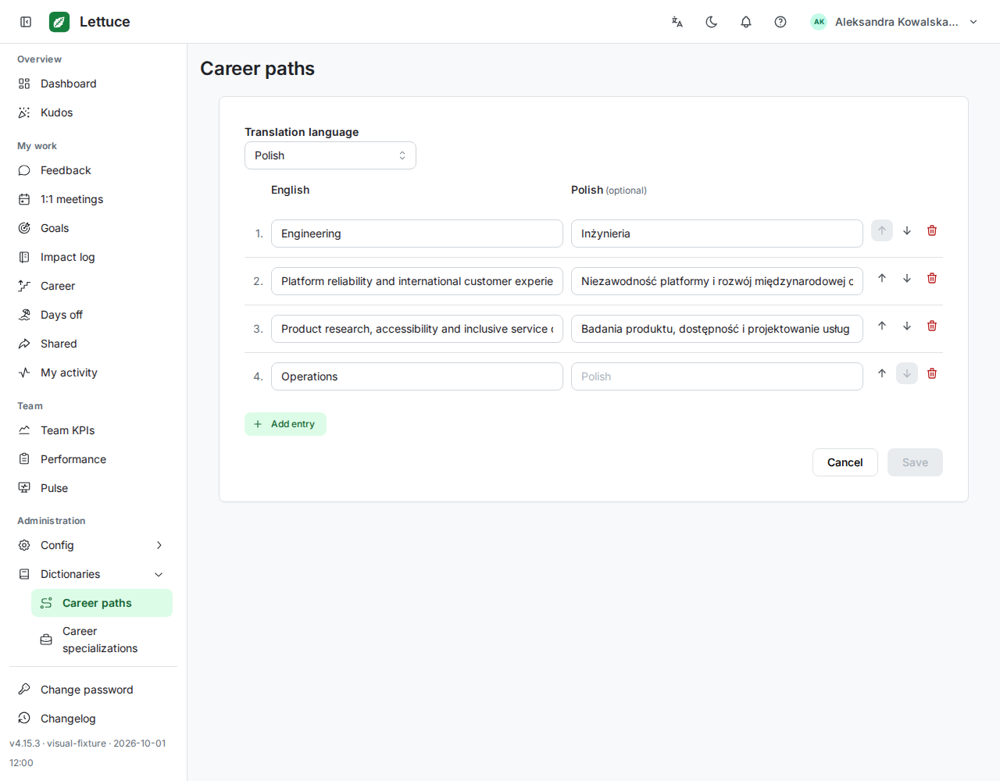
dictionary career paths admin en light 14401440 × 1000 capture dictionary career paths member en dark 12801280 × 1000 capture
dictionary career paths member en dark 12801280 × 1000 capture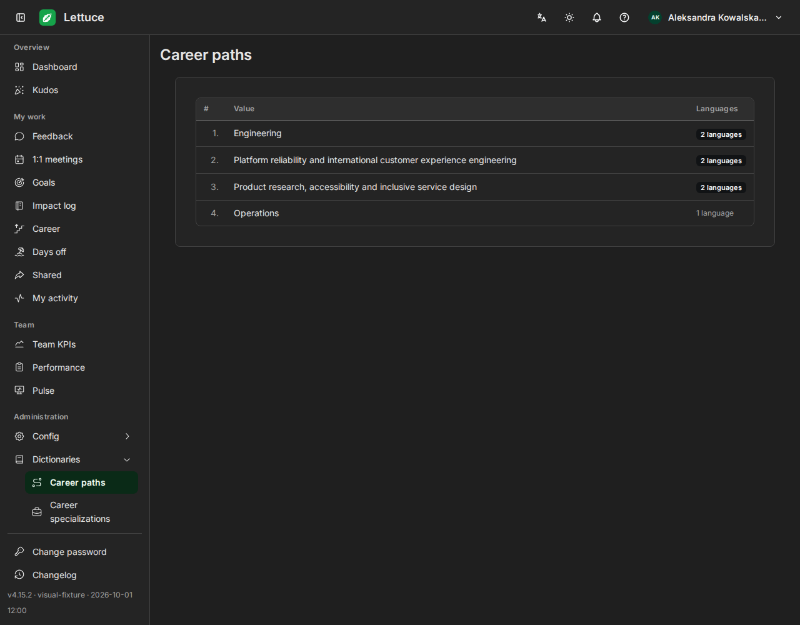
dictionary career paths member en light 12801280 × 1000 capture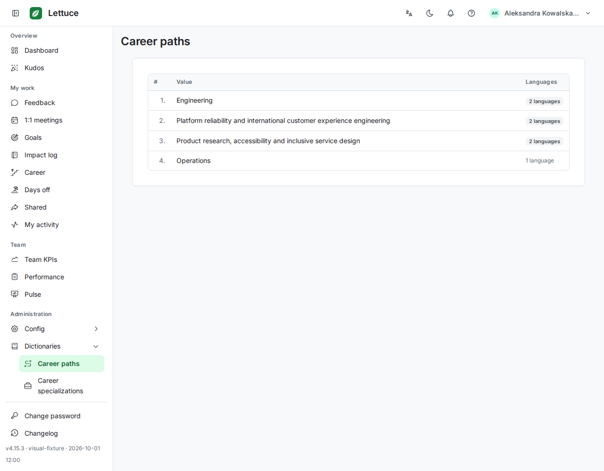
dictionary career specializations member en light 12801280 × 1000 capture dictionary pulse rotating questions member en light 12801280 × 1000 capture
dictionary pulse rotating questions member en light 12801280 × 1000 capture dictionary seniority levels member en light 12801280 × 1000 capture
dictionary seniority levels member en light 12801280 × 1000 capture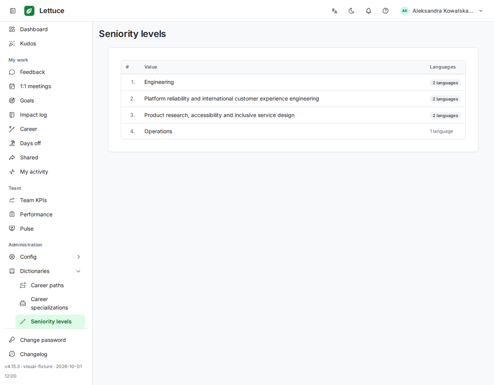
feedback provided en light 12801280 × 1472 capture feedback provided en light 14401440 × 1000 capture
feedback provided en light 14401440 × 1000 capture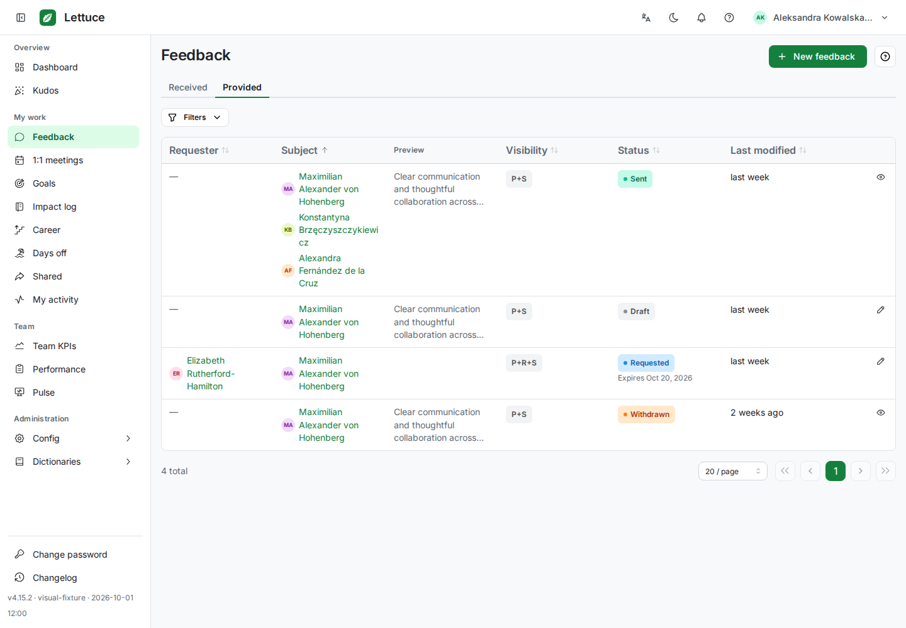
feedback provided pl light 12801280 × 1472 capture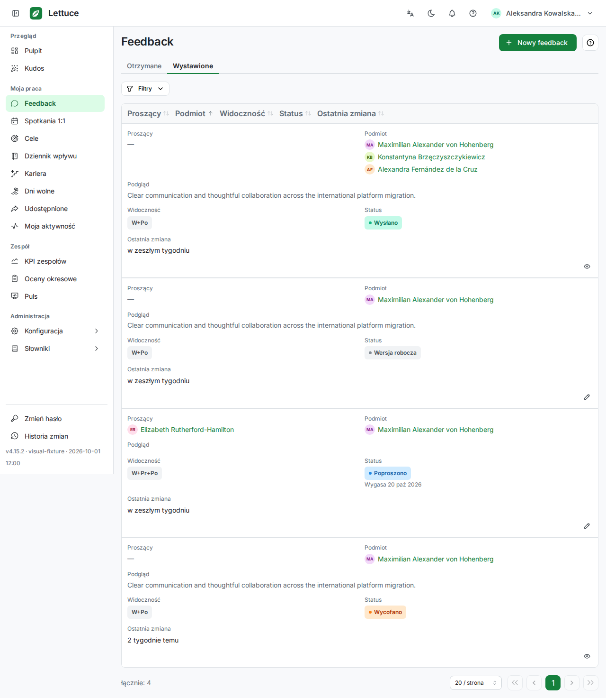
feedback received en light 12801280 × 1147 capture feedback received en light 14401440 × 1000 capture
feedback received en light 14401440 × 1000 capture dashboard manager en light 12801280 × 1363 capture
dashboard manager en light 12801280 × 1363 capture dashboard member en light 14401440 × 1000 capture
dashboard member en light 14401440 × 1000 capture teams admin en light 14401440 × 1000 capture
teams admin en light 14401440 × 1000 capture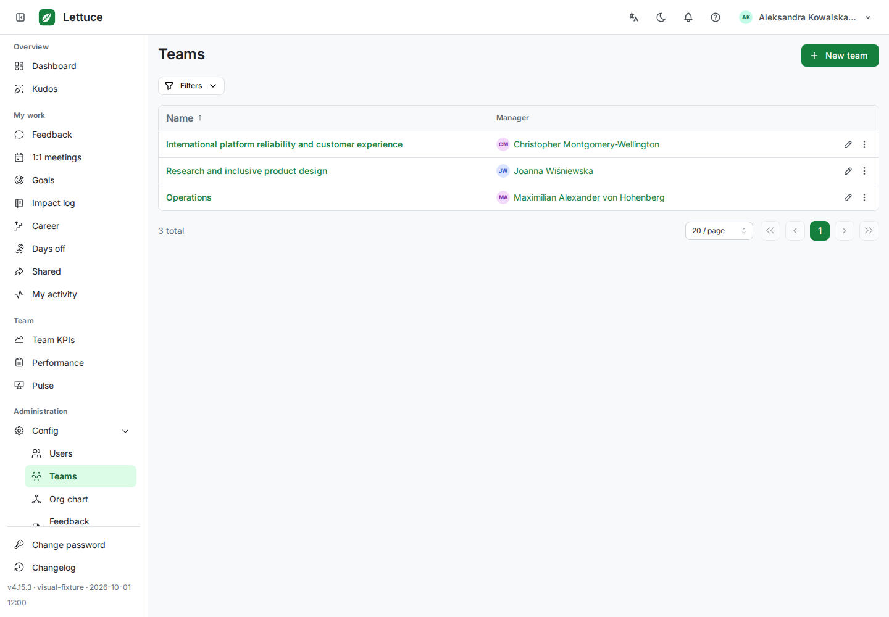
teams member en light 12801280 × 1000 capture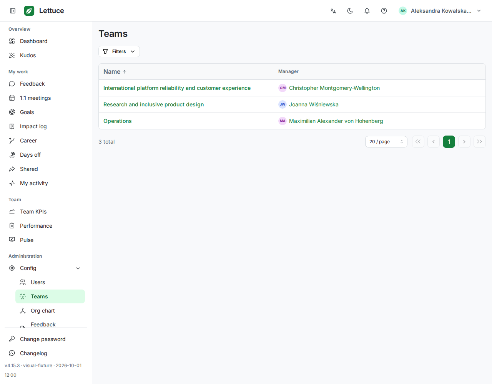
users admin en light 14401440 × 1000 capture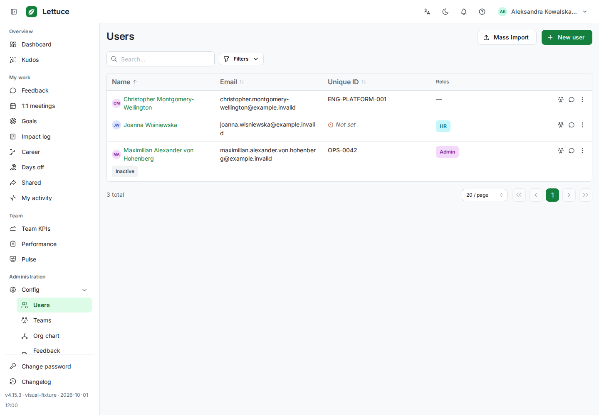
users member en light 12801280 × 1000 capture New feedback · member · 1280pxEmpty recipient picker and rich editor, visibility/template controls, disabled save actions.1280 × 1000 · full-page capture
New feedback · member · 1280pxEmpty recipient picker and rich editor, visibility/template controls, disabled save actions.1280 × 1000 · full-page capture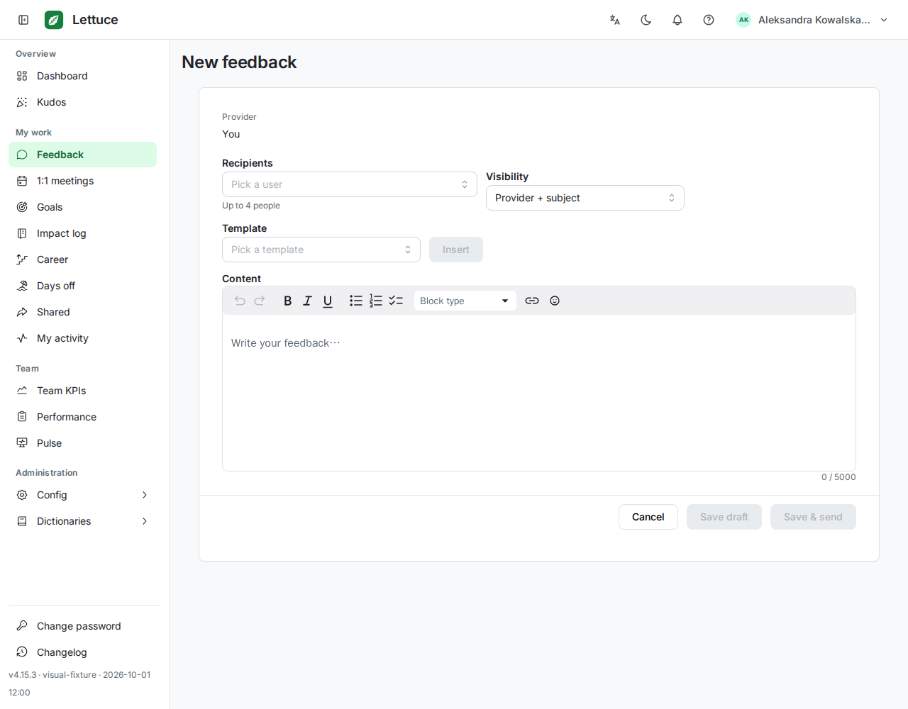
Draft feedback · provider · 1440pxThree immutable recipients, rich Markdown content, metadata, tabs and enabled footer actions.1440 × 1000 · full-page capture Sent feedback · provider · 1280pxRequested feedback with one recipient, rendered content, metadata and provider actions. The existing requester-name truncation is retained.1280 × 1000 · full-page capture
Sent feedback · provider · 1280pxRequested feedback with one recipient, rendered content, metadata and provider actions. The existing requester-name truncation is retained.1280 × 1000 · full-page capture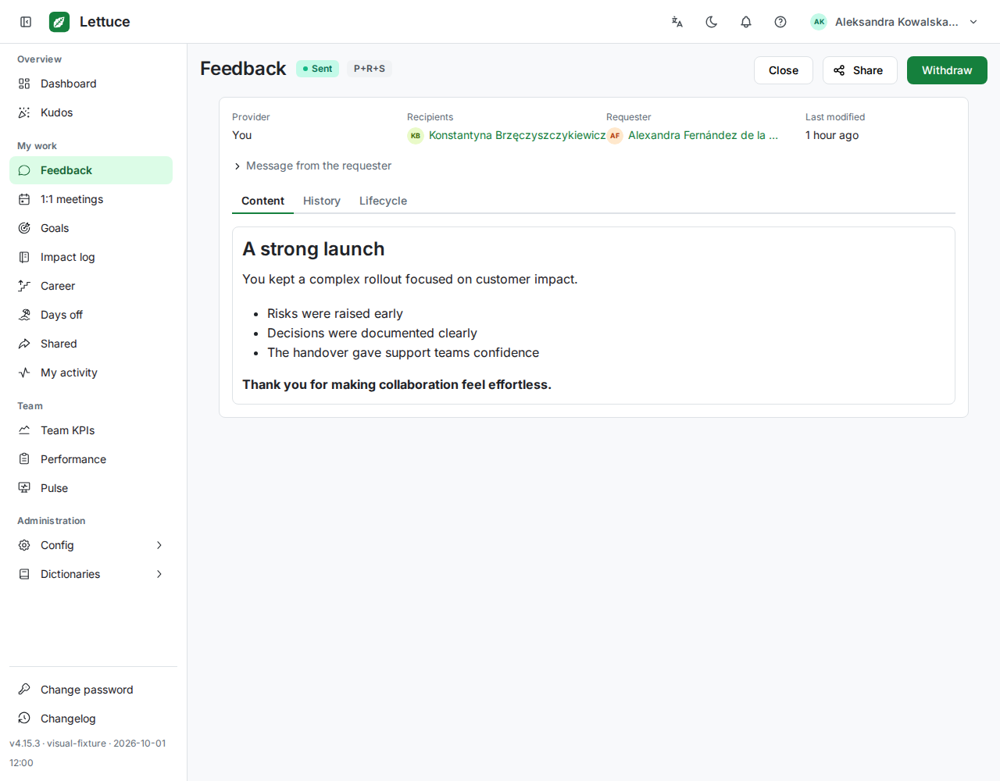
New team · validation errors · 1280pxRequired name and manager errors after submitting the empty form. No API write occurs.1280 × 1000 · full-page capture Team detail · member · 1280pxTeam identity and read-only two-person roster with long names and row actions.1280 × 1000 · full-page capture
Team detail · member · 1280pxTeam identity and read-only two-person roster with long names and row actions.1280 × 1000 · full-page capture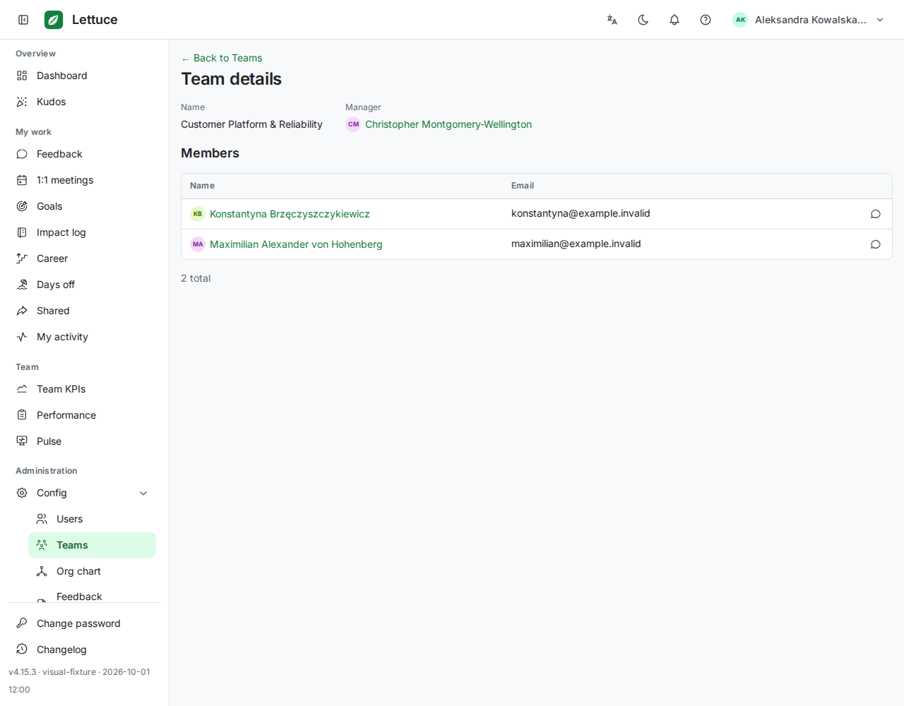
Person detail · manager · 1440pxDirect-report profile, statistics, one managed-team badge and action panel.1440 × 1000 · full-page capture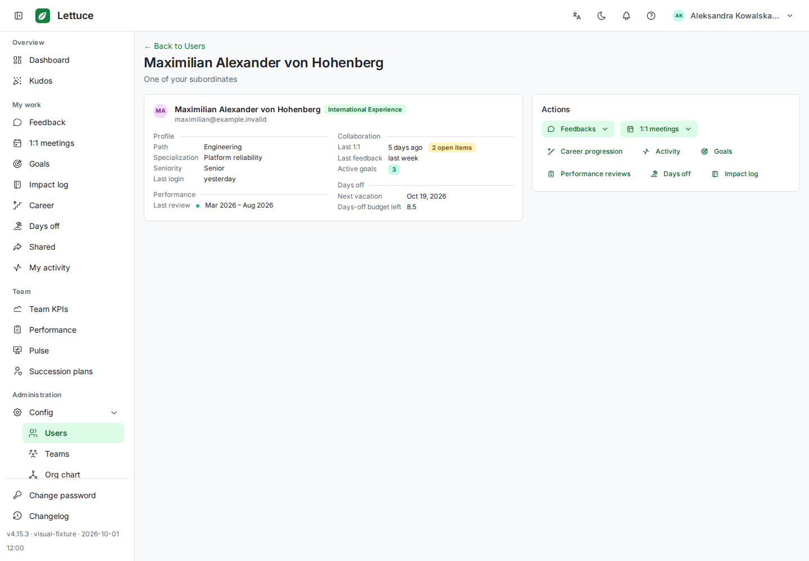
Further expansion is parked at the owner’s request.